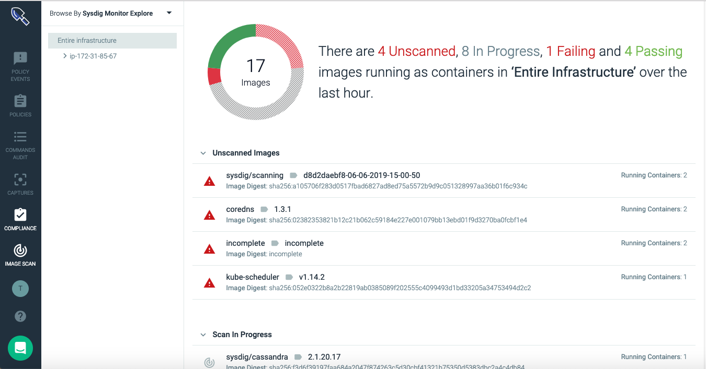
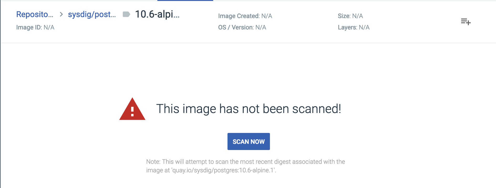
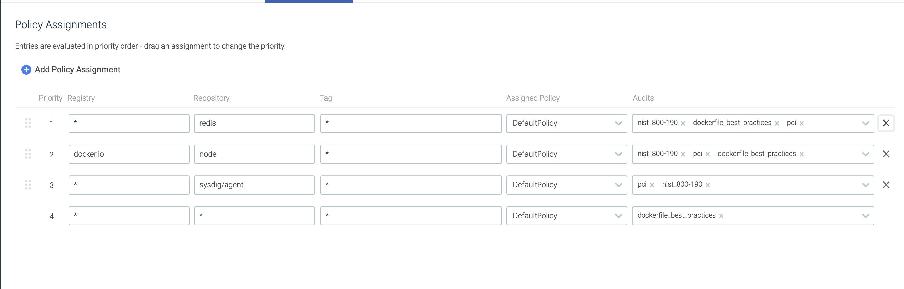
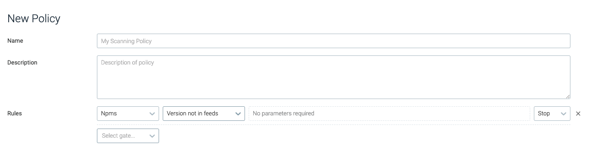
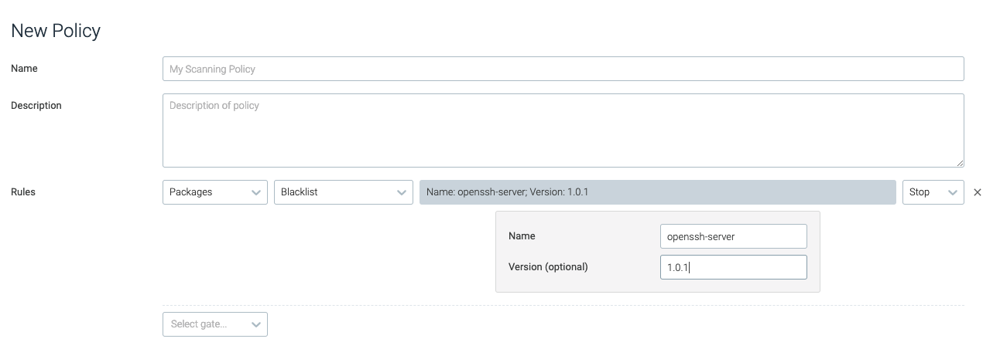
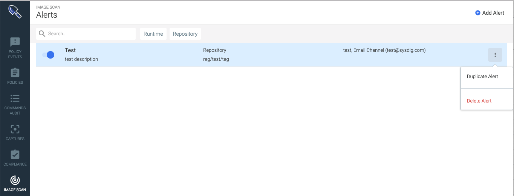

Image Scanning
Image scanning allows you to scan container images for vulnerabilities, secrets, license violations, and more. It can be used as part of a development build process as well as for scanning your container registry.
The Runtime panel provides a continuously updated report on the images in your environment.
 |
How Sysdig Image Scanning Works
The basic set up for image scanning is simple: provide registry information where your images are stored, trigger a scan, and review the results.
Behind the scenes:
Image contents are analyzed.
The contents report is evaluated against multiple vulnerability databases.
It is then compared against default or user-defined policies.
Results are reported, both in Sysdig Secure and (if applicable) in a developer's external CI tool.
Image Contents Reported
The analysis generates a detailed report of the image contents, including:
Official OS packages
Unofficial OS packages
Configuration files
Credentials files
Localization modules and software-specific installers:
Javascript with NPM
Python PiP
Ruby with GEM
Java/JVM with .jar archives
Image metadata and configuration attributes
Vulnerability Databases Used
Sysdig Secure continuously checks against a wide range of vulnerability databases, updating the Runtime scan results with any newly detected CVEs.
The current database list includes:

Policy and Alert Refinements
Vulnerabilities are compared against the default scanning policies included with Sysdig Secure.
Users can also:
add and edit policies
assign policies to particular registries, images, or tags
whitelist or blacklist particular CVEs or images
configure scanning alerts
trigger auto-scans.
Use Cases
As an organization, you define what is an acceptable, secure, reliable image running in your environment. Image scanning for the development pipeline follows a somewhat different flow than for security personnel.
Scanning During Container Development (DevOps)
Use image scanning as part of your development pipeline, to check for best practices, vulnerabilities, and sensitive content.
To begin:
Add Registry: Add a registry where your images are stored, along with the credentials necessary to access them.
Integrate CI Tool: Integrate image scanning with an external CI tool, using the Jenkins plugin or building your own integration from a SysdigLabs solution.
Scan Image(s): The plugin or CLI integration triggers the image scanning process. Failed builds will be stopped, if so configured.
Review Results (in CI tool): Developers can analyze the results in the integrated CI tool (Jenkins).
(Optionally: add policies or refine the default policies to suit your needs, assign policies to particular images or tags, and configure alerts and notifications.)
Scanning Running Containers (Security Personnel)
Security personnel use image scanning to monitor which containers are running, what their scan status is, and whether new vulnerabilities are present in their images.
To begin:
Add Registry: Add a registry where your images are stored, along with the credentials necessary to access them.
Scan Image(s): Trigger an image scan (manually or by configuring an alert to auto-scan).
Review Results (in Sysdig Secure): Security personnel can analyze scan results in the Sysdig Secure image scanning UI.
(Optionally: add policies or refine the default policies to suit your needs, assign policies to particular images or tags, and configure alerts and notifications.)
Next Steps
Note
Image Scanning requires access to an external vulnerability feed. To ensure proper access to the latest definitions, refer to the Network and Port requirements.
Refer to the pages in this section to begin scanning the container images in your environment.
Scanning During Container Development (DevOps)
Scanning Running Containers (Security Personnel)
Integrate Image Scanning into Development Pipeline
You have the option to use image scanning as part of your development pipeline, to check for best practices, vulnerabilities, and sensitive content.
Integrate with Jenkins
Sysdig has a plugin to integrate Sysdig image scanning into a Jenkins-based build process.
Install and Configure the Jenkins Plugin
The Sysdig Secure Jenkins Plugin documentation (at jenkins.io) describes:
Prerequisites
Obtaining the plugin
Necessary system configuration steps in the Jenkins UI
Adding Sysdig Secure Image Scanning as build step (in the Jenkins UI)
Configuring the actions to take on scanned builds (e.g. when to fail a build or issue a warning).
Obtain Scan Results in Jenkins
The Sysdig plugin generates a scan report listed in the Jenkins build list:
Click on the Sysdig Scanning Report to view the summary information and a list of policy checks and results.
Additional Solutions for other CI/CD Tools
Sysdig has also developed reference code for integrating into the build process using other CI/CD tools, such as Bamboo or GitLab.
These are not fully supported plugins, but rather examples and articles from which to build. They may be promoted as part of SysdigLabs.
This blog describes an integration solution with Atlassian Bamboo.
Manage Registry Credentials
Registry credentials are required for Sysdig Secure to pull and analyze images. Each of the registry types has unique input fields for the credentials required (e.g., username/password for docker.io; JSON key for Google Container Registry).
Add a New Registry
From the
Image Scanningmodule, selectRegistry Credentials.Click
Add Registry.The New Registry page is displayed.

Enter the
Pathto the registry. E.g.docker.io.Select the registry
Typefrom the drop-down menu.Configure the registry-specific
credentials(based on theTypechosen):Docker V2There are many Docker V2 registries, and the credential requirements may differ.
For example, for Azure Container Registry:
Admin Account
Username: in the'az acr credentials show --name <registry name>'command resultPassword: The password or password2 value from the'az acr credentials show'command resultService Principal
Username: The service principal app idPassword: The service principal password
AWS ECR:
AWS access key
AWS secret key
Google Container Registry:
JSON Key
(Primarily for OpenShift clusters): Add an
internal registry address.The recommended way to run an image registry for an OpenShift cluster is to run it locally. The Sysdig agent will detect the internal registry names, but for the Anchore engine to pull and scan the image it needs access to the internal registry itself.
Example:
External name:
mytestregistry.example.comInternal name:
docker-registry.default.svc:5000Note
Sysdig maps the internal registry name to the external registry name, so the
RuntimeandRepositorylists will show only the external names.Optional: Toggle the switch to
Allow Self-Signedcertificates.By default, the UI will only pull images from a TLS/SSL-enabled registry.
Toggle
Allow Self-Signedto instruct the UI not to validate the certificate (if the registry is protected with a self-signed certificate or a cert from an unknown certificate authority).Optional: Toggle the
Test Credentialsswitch to validate your entries.When enabled, Sysdig will attempt to pull the image using the entered credentials. If it succeeds, the registry will be saved. If it fails, you will receive an error and can correct the credentials or image details.
If enabled, then enter the
test registry pathin the format :registry/repo:tag
E.g.
quay.io/sysdig/agent:0.89Click
Save.
Edit a Registry
From the
Image Scanningmodule, selectRegistry Credentials.Select an existing registry to open the
Editwindow.Update the parameters as necessary and click
Save.Note
The registry Type cannot be edited.
Delete a Registry
From the
Image Scanningmodule, selectRegistry Credentials.Select the existing registry to open the
Editwindow.Click
Delete Registryand clickYesto confirm the change.
Next Steps
When at least one registry has been added successfully, it is possible to scan images and review scan results, taking advantage of the Default scanning policy provided.
Scan Images
Once you have configured registry credentials where images are stored, you can trigger image scans manually or automatically.
Manually Scan an Image
When a new image is added to a running environment, it may need to be scanned manually. This can be done from either the Runtime tab, or the Repositories tab.
From the Runtime Tab
To manually scan an image from the Runtime tab:
From the
Image Scanningmodule, choose theRuntimetab. Select an image from the list of unscanned images.
 Click
Scan Now.
From the Repositories Tab
From the
Image Scanningmodule, choose theRepositoriestab.Click
Scan ImageDefine the path to the image, and click
Scan.
Automatically Scan Images
Configure a scanning alert to trigger image scanning automatically when an unscanned image is found, by setting the Unscanned Image trigger drop-down menu to Scan Image.
See also Manage Scanning Alerts.
Manage Scanning Policies
Image scanning policies define several scenarios, such as:
The build process may be stopped.
Administrators may be alerted to potential risks within container images.
Each scanning policy is comprised of rules built of gates and triggers. Sysdig includes default policies that can be used to run scans as soon as registry credentials have been configured.
Users can create additional rules or policies from the available Scanning Policy Gates and Triggers.
Preconfigured Policies
Sysdig provides four baseline policies that can be used as-is or as templates on which to build.
 |
Default Policy
This policy covers the most common image scanning cases, such as:
checking for medium and high vulnerabilities
checking configuration items (e.g., ensuring health checks in an image or disallowing exposed ports)
validating that the vulnerability feed data is up-to-date.
This policy is a basic catch-all that cannot be deleted. If no other policy assignments are made, the Default policy is automatically used.
Tip
You can edit the Default policy and edits will be retained even when you upgrade Sysdig Secure.
Preconfigured Compliance Policies
The three other preconfigured policies deal with compliance rules. To use them, you must add them to the Policy Assignments list.
Warning
If you want to edit a preconfigured compliance policy, create a new policy with matching rules and edit that.
Otherwise, your customizations may be overwritten and lost during Sysdig Secure upgrades.
This policy provides out-of-the-box rules around Dockerfile best practices, such as disallowing:
secrets baked in as environment variables
rootuser configurationexposed ports
run instructions that include
.yumupgrades.
This policy maps NIST 800-190 controls to a Sysdig Secure scanning policy, such as disallowing:
non-official node or Ruby packages
addinstructions in a Docker filethe use of base distributions outside of expected values.
This policy maps PCI (Payment Card Industry) controls to a Sysdig Secure scanning policy, such as disallowing vulnerabilities or credentials to be included in the image.
Customized Policies
Remember not to edit preconfigured compliance scanning policies directly. Create a matching policy and edit that one.
Create a Policy
From the
Image Scanningmodule, selectScanning Policiesand clickAdd Policy(+).The New Policy page is displayed.

Define a
Nameand an optionalDescriptionfor the new policy.Add a
Rule:Select the
Gateand then theTriggerfrom the drop-down menus.Configure relevant parameters. (Some triggers do not require parameters to be set.)
See Scanning Policy Gates and Triggers for details on each option.
The example below uses the
vulnerabilitiesgate with thepackagetrigger.
Optional: Repeat step 5 to add rules as necessary.
Click
Save.
Edit a Policy
From the
Image Scanningmodule, selectScanning Policies.Select the desired policy from the list.
Edit the policy rules as required, and click
Save Policy.
Delete a Policy
From the
Image Scanningmodule, selectScanning Policies.Select the desired policy from the list.
Click the
Delete(trash can) icon and chooseYesto confirm the change.
Whitelist/Blacklist
You can globally whitelist or blacklist particular images or CVEs, if desired. See Whitelist | Blacklist CVEs and Images. This does not affect the policy evaluation order.
Manage Policy Assignments
Unless you use a very simple, single-policy approach to scanning, you will probably assign particular policies to particular registries, repositories, or tags.
Use the Policy Assignments page to do this.
For example:
To evaluate all images with a âProdâ tag with your Example Prod Image Policy, use the assignment (
registry/repo/tag):*/*/ProdTo evaluate all images from gcr.io with an Example Google Policy, use the assignment (
registry/repo/tag):gcr.io/*/*
Assign a Policy
From the
Image Scanningmodule, selectScanning Policiesand choose +Policy Assignments.The previously defined assignments are listed in priority order.
 Click
+Add Policy Assignment.A new entry line appears at the top of the Assignment page. Enter the desired assignment details:
Priority: Priority is the order of evaluation against the assigned policy. Each new assignment is auto-placed at Priority 1. Once a policy assignment is created and saved, you can change its priority order by dragging it into a new position on the list. See also Using Priorities.Registry:Any registry domain (e.g.quay.io). Wildcards are supported; an asterisk * specifies any registry.Repository:Any repository (typically = name of the image). Wildcards are supported; an asterisk * specifies any repository.Tag: Any tag. Wildcards are supported; an asterisk * specifies any tag.Assigned Policy: Name of policy to use for evaluation. Select from the drop-down menu.
Click
Save.Optional: Reorganize the Priority order by clicking the drag handle (the four dots to the left of a line) and dragging the assignment to a different spot on the list.
Using Priorities
When you use more than one scanning policy, the Anchore engine evaluates them in top-down order, starting from Priority 1 in the Policy Assignment list. The first policy assignment rule that matches an input image will be evaluated, and all subsequent rules ignored. Therefore, the priority order is important.
Tip
For example, imagine a list with two defined policy assignments:
Priority 1 Registry = quay.io Repository = sysdig/*
Priority 2 Registry = quay.io Repository = sysdig/myrepo
Since the first rule uses a wild card, the evaluation applies to all repos beginning with sysdig/ and will stop before evaluating sysdig/myrepo.
Reverse the priority order to get the behavior you want.
There is a catch-all entry at the bottom of the Policy Assignment list that cannot be removed. It has the format :
registry = * repository = * tag = * assigned policy = default
(You can change the assigned policy, but other fields cannot be edited.)
The purpose of this row is to ensure that any registries that do not fall under another policy evaluation will at least be evaluated against the system-configured Default policy.
Whitelist | Blacklist CVEs and Images
Sysdig Secure allows users to define CVEs and images as globally trusted or blacklisted. For example, a low-risk CVE can be globally approved to prevent it from impacting builds that include more critical fixes. Alternatively, specific images can be marked as globally approved or not to ensure they always/never pass a scan.
Tip
Blacklist options for other entities, such as users, ports, packages, etc., are listed in Scanning Policy Gates and Triggers.
Review the Whitelisted/Blacklisted CVEs and Images
To review the current list of whitelisted/blacklisted CVEs and images:
From the I
mage Scanningmodule, selectScanning Policies.Click the
Whitelists and Blacklistsbutton.Choose the relevant tab (
CVE Whitelist,Global Trusted Images, orGlobal Blacklisted Images).
Whitelist a CVE
There are two ways to whitelist a CVE - from the Scanning Policies tab, and from the Repositories tab.
From the Scanning Policies Tab:
From the I
mage Scanningmodule, selectScanning Policies.
Click
Whitelists and Blacklists.Click
Add CVE,add each CVE in a comma-separated list, then clickOkto save.Each item in the list must follow the CVE naming format (
CVE-YEAR-ID).
From the Repositories Tab
From the I
mage Scanningmodule, chooseRepositoriesand select one of the listed repos.If there is a policy result related to a vulnerability, you can whitelist that CVE.
Click the
More Options(+) icon beside the relevant CVE.
Select
Add CVE to Global Whitelist.
The CVE will now be listed in the CVE Whitelist tab.
Whitelist / Blacklist an Image
Note
If an image is added both in the "Trusted Images" list and in the "Blacklisted Image" list, the blacklisted one takes precedence.
There are two ways to whitelist or blacklist an image - from the Scanning Policies tab, and from the Repositories tab.
From the Scanning Policies tab:
From the I
mage Scanningmodule, selectScanning Policies.Click
Whitelists and Blacklists.Choose the relevant tab (
Global Trusted Images, orGlobal Blacklisted Images) and click theAdd Imagebutton.Add each image in a comma-separated list, then click
Ok.A tag name must be valid ASCII and may contain lowercase and uppercase letters, digits, underscores, periods and dashes.
A tag name may not start with a period or a dash and may contain a maximum of 128 characters.
From the Repositories tab:
From the I
mage Scanningmodule, choose theRepositoriestab.Select the relevant repository from the list and open the relevant image.
Click the
More Options(+) icon at the top of the page:
Select either
Add Image to Trusted ImagesorAdd Image to Blacklisted Imagesas needed.
The CVE will now be listed in the Global Trusted Images tab or Global Blacklisted Images tab, as appropriate.
Remove a CVE or Image from the Whitelist/Blacklist
To remove one or more CVEs or Images from the various lists:
From the I
mage Scanningmodule, selectScanning Policies.Click
Whitelists and Blacklists.Navigate to the relevant tab (
CVE Whitelist,Global Trusted Images, orGlobal Blacklisted Images).Click the
Delete(X) icon beside the relevant CVEs/images
Click
Save.
Scanning Policy Gates and Triggers
This document describes the gates (and their respective triggers / parameters) that are supported within Sysdig Secure policy bundles. Use these policy gates, triggers, and parameters to build in-depth scanning policies, from whitelisting / blacklisting partial file names to defining what login shells are approved.
Note
This information can also be obtained using the CLI:
user@host:~$ anchore-cli policy describe (--gate <gatename> (--trigger <triggername))
For more information, see Manage Scanning Policies.
Always
This gate provides users with a valuable testing resource, as it will be triggered unconditionally.
The always trigger / gate will trip if it is present in the policy.
Note
The Always gate is useful for testing whether the image blacklist/whitelist is working as expected.
 |
Dockerfile
The dockerfile gate reviews the contents of a dockerfile, or the assumed contents of a dockerfile if one is not provided, for exposed ports and instructions that do not follow best practices.
Note
The gate assumes what the contents would be based on the docker layer history.
This trigger reviews whether the effective user matches the user provided, and will fire based on the configured type.
Parameter | Description | Example |
|---|---|---|
| Determines whether the user should be whitelisted or blacklisted. | N/A |
| The name of the user. | root,docker |
 |
This trigger evaluates the set of exposed ports to determine whether they should be whitelisted or blacklisted.
Parameter | Description | Example |
|---|---|---|
| Defines whether the evaluation should skip inferred or guessed dockerfiles, and only evaluate user-provided dockerfiles. The default value is | true |
| A comma-separated list of port numbers. | 80,8080,8088 |
| Defines whether the ports should be whitelisted or blacklisted. | N/A |
 |
This trigger evaluates whether any directives / instructions in the list match the conditions in the dockerfile.
Parameter | Description | Example |
|---|---|---|
| Defines whether the evaluation should skip inferred or guessed dockerfiles, and only evaluate user-provided dockerfiles. The default value is | true |
| The type of check to perform. | = |
| The dockerfile instruction to check. | FROM |
| The value to check the dockerfile instruction against. | scratch |
 |
This trigger will trip if there is no dockerfile supplied with the image. No parameters are required for this trigger.
Files
The Files gate reviews files within the analyzed image. This evaluation covers file content, names, and filesystem attributes.
This trigger is tripped for each file where a match has been found using the configured regex in the analyzer_config.yaml content_search section.
Note
For more information regarding the regex values, refer to the analyzer_config.yaml file.
Parameter | Description | Example |
|---|---|---|
| The regex string that appears in the | .*password.* |
 |
This trigger is tripped if the name of a file in the container matches the provided regex.
Note
This trigger has a performance impact on policy evaluation.
Parameter | Description | Example |
|---|---|---|
| The regex to search for. | .*\.pem |
 |
This trigger is tripped for each file that has a set-user identification (SUID) or set-group identification (SGID) configured. No parameters are required.
Licenses
This gate is used to review software licenses found in the container image, to ensure, for example, that packages that violate internal company policy are not being used.
This trigger will be tripped if the image contains packages distributed under the exact license specified.
Parameter | Description | Example |
|---|---|---|
| A comma-separated list of license names to blacklist. | GPLv2+,GPL-3+,BSD-2-clause |
 |
This trigger will be tripped if the image contains packages distributed under a license that includes the partial strings provided.
Parameter | Description | Example |
|---|---|---|
| A comma-separated list of strings to blacklist for licenses. | LGPL,BSD |
 |
Metadata
This gate reviews image metadata, including the size, operating system, and architecture.
The attribute trigger is tripped if a named image metadata value matches the given condition.
Parameter | Description | Example |
|---|---|---|
| The attribute name to check. | size |
| The operation to perform for the evaluation. | > |
| The value used for the evaluation. | 1073741824 |
 |
NPMs
The NPMs gate reviews any images that have NPM packages installed.
This trigger is tripped if the evaluated image has an NPM package installed that has been blacklisted, either by name or optionally by name and version.
Parameter | Description | Example |
|---|---|---|
| The name of the blacklisted NPM package. | time_diff |
| The specific version of the NPM package to blacklist. | 0.2.9 |
 |
This trigger is tripped if the engine does not have access to the NPM data feed. No parameters are required.
 |
This trigger is tripped if the NPM data feed lists a newer version of the package. No parameters are required.
 |
This trigger is tripped if the NPM installed is not in the official NPM database. No parameters are required.
 |
This trigger is tripped if the NPM version is not listed as a valid version in the official NPM feed. No parameters are required.
|  |
Packages
The Packages gate reviews all packages within the image, verifying names, versions, and whitelisted / blacklisted packages.
This trigger is tripped if the image contains packages that have been blacklisted by either name, or name and version.
Parameter | Description | Example |
|---|---|---|
| The name of blacklisted package/s. | openssh-server |
| The exact version of the package that should be blacklisted. | 1.0.1 |
|  |
The required_package trigger is tripped if the specified package / version is not found in the image.
Parameter | Description | Example |
|---|---|---|
| The name of the required package. | libssl |
| The required package version. | 1.10.3rc3 |
| Defines whether the trigger should require the exact package and version (exact), or just a version of the package (minimum). This is only relevant if the version is defined. | exact |
 |
This trigger reviews the package integrity against the package database in the image, and is tripped for change or removal of content in either all or a defined list of directories provided.
Parameter | Description | Example |
|---|---|---|
| Defines whether the check should focus on missing packages, changed packages, or all. | changed |
| Defines the list of directories the check should be limited to. | /usr,/var/lib |
| Defines the list of packages that should be verified. | libssl,openssl |
 |
Passwd File
This gate reviews /etc/passwd for blacklisted users, groups, and shells.
This trigger trips if the whole password is found in the /etc/password file.
Parameter | Description | Example |
|---|---|---|
| The full entry to match in | ftp:x:14:50:FTP User:/var/ftp:/sbin/nologin |
 |
This trigger is tripped if the designated group id/s are found in the /etc/passwd file.
Parameter | Description | Example |
|---|---|---|
| A numeric, comma separated list of group ids that will cause the trigger to trip. | 999,20 |
 |
This trigger will trip if a designated login shell is found under any user in the /etc/passwd file.
Parameter | Description | Example |
|---|---|---|
| The list of shell commands to blacklist. | /bin/bash,/bin/zsh |
 |
This trigger will be tripped if the specified user ID is present in /etc/passwd.
Parameter | Description | Example |
|---|---|---|
| The numerical, comma-separated list of user IDs to blacklist. | 0,1 |
 |
The blacklist_usernames trigger will trip if the specified username is found in the /etc/passwd file.
Parameter | Description | Example |
|---|---|---|
| A comma-separated list of usernames to blacklist. | daemon,ftp |
 |
The content_not_available trigger will trip if the /etc/passwd file is not present in the image. No parameters are required.
 |
Ruby Gems
The Ruby Gems gate ensures that developers are using official packages from the official GEM database, and are not using versions of packages that are no longer supported.
The blacklist trigger trips if a GEM package that matches the configured name and version is found in the evaluated image.
Parameter | Description | Example |
|---|---|---|
| The name of the gem. | time_diff |
| The version of the gem to blacklist. | 0.2.9 |
 |
This trigger will trip if Sysdig does not have access to the GEM data feed. No parameters are required.
 |
This trigger will trip if an installed GEM package is not the latest version. No parameters are required.
 |
This trigger will trip if an installed GEM is not in the official GEM database. No parameters are required.
 |
This trigger will trip if the GEM is not listed in the official GEM feed as a valid / supported version. No parameters are required.
 |
Secret Scans
Secret scans determine, based on configured regex, whether secrets that could be available if an image was compromised have been baked into the image.
The content_regex_checks trigger trips if the content search analyzer finds a match with the configured and named regexes. Matches are filtered by the content_regex_name, and the filename_regex, if either are set.
Note
The content_regex_name should be a value from the secret_search section of analyzer_config.yaml.
Parameter | Description | Example |
|---|---|---|
| The name of the variable / content. If found in the image, this should trip the trigger. NoteThe names available by default are | AWS_ACCESS_KEY |
| Filters the files that should be analyzed for the presence of the | /etc/.* |
 |
Vulnerabilities
CVE / vulnerability checks can be used to ensure the included packages don't have vulnerabilities above a set level, are older than a designated period, or if data is unavailable.
The package trigger is tripped if a vulnerability in an image matches the configured comparison criteria. The table below outlines the available parameters and criteria:
Parameter | Description | Example |
|---|---|---|
| If present, the fix availability for the vulnerability record must match the value of the parameter. | true |
| The specific type of package. | all |
| The vulnerability severity. | high |
| The type of comparison to perform for the security evaluation. | > |
| If true, an available fix for this CVE must not be explicitly marked as "Won't be addressed by the vendor". | true |
The stale_feed_data trigger will be tripped if the CVE data is older than the window specified.
Parameter | Description | Example |
|---|---|---|
| Determines how old in days sync data can be before the trigger is tripped. | 10 |
 |
If no vulnerability data is available, the vulnerability_data_unavailable trigger will trip. No parameters are required for this trigger.
 |
Manage Scanning Alerts
Image scanning alerts, like all Sysdig alerts, can be configured to notify users when an issue in the infrastructure arises. Scanning alerts can be created for static images in the repository or for running (runtime) images. Scanning alerts focus on when unscanned images are added to the environment, images fail a policy evaluation, scanning results change, or CVEs are updated.
Examples of when users might implement alerts:
I want to know if there are new CVE updates for the 3 different images I handle
I want to be notified if any of the common images from docker hub that are used all over my organization have a policy status that has changed
Manage the Scanning Alert List
From the Image Scanning module, choose the Alerts tab. The Scanning Alert list is displayed.
|  |
From here you can search for existing alerts, and create, duplicate or delete alerts.
Add an Alert
To create a new alert: From the
Image Scanningmodule, choose theAlertstab and clickAdd Alert.Select either
RuntimeorRepositoryalert type.Fill in the appropriate New Alert page (below).
Create a Runtime Alert
Use Runtime alerts to scan running images and trigger a notification in case of a policy violation, status change, or unscanned image added to the environment. Enter the alert parameters and click Save.
 |
Enter a Name and optional Description.
Use Entire Infrastructure or define a narrower scope.
 |
Scan:Check the box and choose Scan to automatically scan any detected image within the scope.See also Scan Images.
Alert Only: Send an alert, but don't automatically scan the images.
Pass/Fail:Choose this option to be notified when an image that had previously passed now fails its policy evaluation.Any Change:Choose this option to be notified when there is any change on a previously scanned image result.
Note that if Scan Result Change is checked and a notification channel is configured, an alert will be sent. If no channel is set up, nothing will happen.
For example, the following image shows a Slack notification that was triggered when "Any Change" was configured.
 |
Choose this option to be notified whenever a vulnerability is added, updated, or removed from a running image.
Click + Add Channel to select a configured notification channel (e.g. email) to be used for alert notifications.
If no notification channels have been defined for your Sysdig Secure environment yet, see Set Up Notification Channels.
Create a Repository Alert
Use Repository alerts to scan static images in the repository and trigger a notification in case of a policy violation, status change, or a new image added to the environment. Enter the alert parameters and click Save.
 |
Enter a Name and optional Description.
Enter the registry scope to be considered in the alert. Wildcards * are supported. If a wildcard is used for either the registry or the repo, the only alert option will be New Image Analyzed.
Check the box to be alerted whenever a new image is analyzed, regardless of the result.
Pass/Fail:Choose this option to be notified when an image that had previously passed now fails its policy evaluation.Any Change:Choose this option to be notified when there is any change on a previously scanned image result.
Note that if Scan Result Change is checked and a notification channel is configured, an alert will be sent. If no channel is set up, nothing will happen.
Choose this option to be notified whenever a vulnerability is added, updated, or removed from an image within the repository alert scope.
For example, the following image shows a Slack notification that was triggered when "CVE Update" was configured.
 |
Click + Add Channel to select a configured notification channel (e.g. email) to be used for alert notifications.
If no notification channels have been defined for your Sysdig Secure environment yet, see Set Up Notification Channels.
Edit an Alert
From the
Image Scanningmodule, choose theAlertstab.Select the desired alert from the list.
Edit the alert trigger, scope, and notification channels as necessary, and click
Save.
Duplicate an Alert
From the
Image Scanningmodule, choose theAlertstab.Select the desired alert from the list.
Click the
More(three dots) icon and clickDuplicate Alertfrom the drop-down, thenYesto confirm.
Delete an Alert
From the
Image Scanningmodule, choose theAlertstab.Select the desired alert from the list.
Click the
More(three dots) icon and clickDelete Alertfrom the drop-down, thenYesto confirm.
Review Scan Results
When you have set up your build environment for scanning (if applicable), added the desired registries, and either triggered a scan manually or configured an alert to scan automatically, then an image scanning report is generated.
There are different ways to access scan results:
Externally (for developers): From an external Continuous Integration (CI) tool such as Jenkins.
Internally (for security personnel): From the Runtime tab or the Repositories tab in the Image Scanning module of Sysdig Secure.
Runtime View
Runtime provides an always-updated report on images that have been running in your environment over the past 1 hour.
In the left column, view the Entire Infrastructure or drill down to a namespace.
The report in the right column lists Unscanned and Scanned images. You can drill down to the Scan Result Details views .
Unscanned Images
Select an unscanned image to manually trigger a scan.
Scanned Images
Select a scanned image to drill down into the details: a Summary page, Policy details, Vulnerability details, and Content violations (e.g., licenses).
Repositories View
Use the Repositories list to view all scans that have ever been done, or to search for a specific image, including those that are not running.
 |
Once you drill down into scanned images on the list, the Scan Result Details views are the same as from the Runtime panel.
Scan Result Details
When you drill down into the Scan Results list, the details menu provides a variety of ways to view vulnerability and policy violation data at a glance.
Policy Summary views
Vulnerabilities summaries
Content summaries
These summaries provide:
An easy-to-parse view of why a specific image failed
Which rules generated the most Warn and Stop actions
Overview of how an image has performed against the various audit policies that have been put in place
Ability to filter for high-severity CVEs, and see which have an available fix
You can also download the Policy Summary to PDF and the Vulnerabilities Summary to a CSV file.
Policy Results Views
The landing page of a Scan Results detail is the Policy Summary view.
You can:
Get a birds-eye view of scanning status
Select a different scan date
Drill down to a detail page
Click Download as PDF to get a full report, including all underlying CVEs.
 |
From the dropdown, select the date of the scan you'd like to analyze.
Select a listed Policy to see details about the STOP and WARN actions triggered in the Evaluation,
as well as the underlying Rules affected.
 |
Review Vulnerability Summaries
Select either Operating System-related or Non-Operating System-related Vulnerability summaries to review.
 |
You can:
Get a birds-eye-view of vulnerability status
Click a CVE number to get the full details
Search or filter by severity
Click Download CSV to get the vulnerabilities data as a CSV file
Review Content Details
Navigate through node, ruby, python, java, OS packages, and the files in a container to search for details about a particular package or file.
**Copy of Review Scan Results**
This page will be updated again for July release and will include an additional new look and needs workflow documentation per DOC-706.
From sketch https://sketch.cloud/s/WE2a8/a/Pnpr4L/play
Design - https://sketch.cloud/s/WE2a8/bgZbe10/play
Personas: Axle, Vivienne Mahajan, Kelvin
Goals
To help identify risky repos
To provide better context around the history of a repo
To be able to easily navigate scan results in a similar fashion to navigating a registry
Key workflows to document
filtering scan results by registry
filtering scan results where the most recent analysis failed
documenting each column and what the values mean
When you have set up your build environment for scanning (if applicable), added the desired registries, and either triggered a scan manually or configured an alert to scan automatically, then an image scanning report is generated.
There are different ways to access scan results:
Externally (for developers): From an external Continuous Integration (CI) tool such as Jenkins.
Internally (for security personnel): From the Runtime tab or the Repositories tab in the Image Scanning module of Sysdig Secure.
Runtime View
Runtime provides an always-updated report on images that have been running in your environment over the past 1 hour.
 |
In the left column, view the Entire Infrastructure or drill down to a namespace.
The report in the right column lists Unscanned and Scanned images. You can drill down to the Scan Result Details views .
Select an unscanned image to manually trigger a scan.
Select a scanned image to drill down into the details: a Summary page, Policy details, Vulnerability details, and Content violations (e.g., licenses).
Repositories View
Use the Repositories list to view all scans that have ever been done, or to search for a specific image, including those that are not running.
 |
Once you drill down into scanned images on the list, the Scan Result Details views are the same as from the Runtime panel.